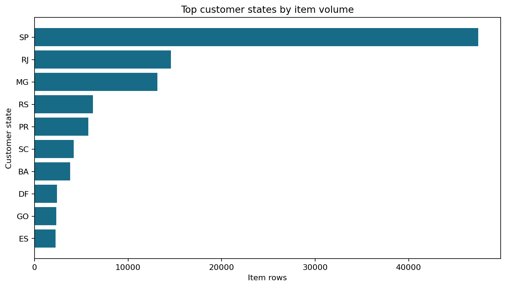
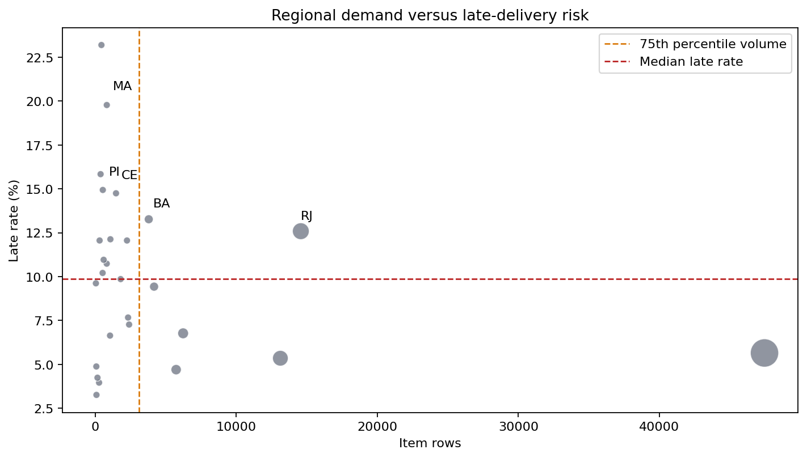

Regional Demand, Delivery, and Satisfaction Analysis
This report is generated by scripts/build_regional_analysis.py from the
deterministic dashboard/data.js output produced by the shared pipeline.
Regional metrics use customer state and item-level joins, as defined in the
project metric dictionary.
Method and guardrails
- Demand is measured by item rows and item-price revenue by customer state.
- Delivery and satisfaction metrics in the risk view use delivered item rows; demand volume and revenue use all item rows.
- States with fewer than 500 item rows are excluded from the risk ranking to reduce small-sample volatility.
- The risk chart shows all states, but its highlighted risk table uses the minimum-volume rule.
- State comparisons are descriptive and do not prove that geography alone causes delay or low reviews.
Demand concentration

The top three states by revenue account for 63.4% of total
state-level item revenue. This concentration makes improvements in major
markets more consequential, but volume alone is not a reason to invest without
checking delivery and satisfaction.
Top states by item volume
| State | Item rows | Revenue | Average review | Late rate |
|---|---|---|---|---|
| SP | 47,449 | 5,202,955.05 | 4.13 | 5.7% |
| RJ | 14,579 | 1,824,092.67 | 3.81 | 12.6% |
| MG | 13,129 | 1,585,308.03 | 4.09 | 5.3% |
| RS | 6,235 | 750,304.02 | 4.05 | 6.8% |
| PR | 5,740 | 683,083.76 | 4.11 | 4.7% |
| SC | 4,176 | 520,553.34 | 4.00 | 9.4% |
| BA | 3,799 | 511,349.99 | 3.81 | 13.3% |
| DF | 2,406 | 302,603.94 | 4.01 | 7.3% |
| GO | 2,333 | 294,591.95 | 3.99 | 7.7% |
| ES | 2,256 | 275,037.31 | 3.99 | 12.1% |
Top states by revenue
| State | Item rows | Revenue | Average review | Late rate |
|---|---|---|---|---|
| SP | 47,449 | 5,202,955.05 | 4.13 | 5.7% |
| RJ | 14,579 | 1,824,092.67 | 3.81 | 12.6% |
| MG | 13,129 | 1,585,308.03 | 4.09 | 5.3% |
| RS | 6,235 | 750,304.02 | 4.05 | 6.8% |
| PR | 5,740 | 683,083.76 | 4.11 | 4.7% |
| SC | 4,176 | 520,553.34 | 4.00 | 9.4% |
| BA | 3,799 | 511,349.99 | 3.81 | 13.3% |
| DF | 2,406 | 302,603.94 | 4.01 | 7.3% |
| GO | 2,333 | 294,591.95 | 3.99 | 7.7% |
| ES | 2,256 | 275,037.31 | 3.99 | 12.1% |
Delivery-risk view

The risk ranking uses at least 500 item rows per state and is ordered
by late rate, then average delivery time. The largest late-rate values should
be interpreted alongside volume and review metrics rather than treated as
standalone priorities.
| State | Item rows | Revenue | Average delivery days | Late rate | Low-review rate |
|---|---|---|---|---|---|
| MA | 800 | 117,009.38 | 21.65 | 20.4% | 21.8% |
| PI | 523 | 84,721.00 | 19.38 | 15.5% | 16.6% |
| CE | 1,426 | 219,757.38 | 20.99 | 15.3% | 19.2% |
| BA | 3,683 | 493,584.14 | 19.25 | 13.7% | 18.6% |
| RJ | 14,143 | 1,759,651.13 | 15.15 | 13.0% | 20.6% |
| PA | 1,054 | 174,470.59 | 23.75 | 12.4% | 19.3% |
| ES | 2,225 | 268,643.45 | 15.65 | 12.2% | 15.2% |
| PB | 586 | 112,586.82 | 20.59 | 11.3% | 15.9% |
| MS | 811 | 115,429.97 | 15.53 | 10.8% | 16.0% |
| RN | 521 | 82,105.66 | 19.33 | 10.4% | 14.2% |
Priority regions
The following view combines high demand (at or above the 75th percentile of
state item volume) with at-or-above-median late rate. It is a prioritization
screen, not a causal model.
| State | Item rows | Revenue | Late rate | Average review |
|---|---|---|---|---|
| RJ | 14,579 | 1,824,092.67 | 13.0% | 3.87 |
| BA | 3,799 | 511,349.99 | 13.7% | 3.86 |
Seller-state and customer-state context
Same-state shipments average 7.93
delivery days versus 15.05
cross-state, with late rates of 6.0%
and 9.0%, respectively. This
supports treating logistics distance as a useful supporting factor; seller
quality, category mix, and destination mix still need to be considered.
Recommendation
Prioritize operational review in the intersection of high demand and elevated
late rate, starting with the priority table above. For lower-volume states,
continue monitoring until at least 500 item rows are available before
making a firm regional investment decision. Pair regional actions with monthly
late-rate, delivery-time, and low-review monitoring.
Reproduction
python3 scripts/build_regional_analysis.py
The command regenerates this report and the two PNG visuals in docs/eda/.